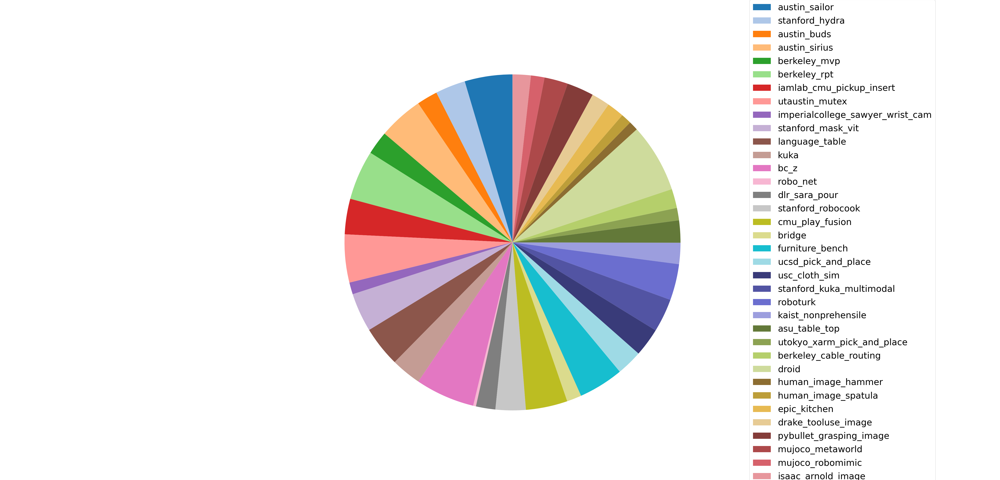
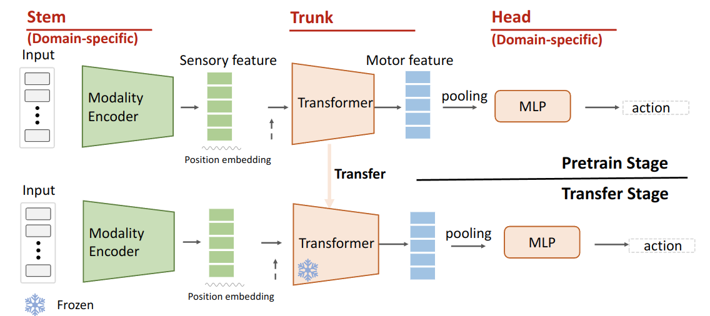

This paper shows that mid-level policy representations can be pre-trained from heterogeneous robot data, which varies across different modalities, domains, and tasks. Current methods rarely benefit from reusing these heterogeneous datasets and instead collect data from one specific domain to train a single policy or unify data inputs, which is prohibitively expensive and difficult.
Our work builds on top of the success of transfer learning, by pre-training the middle section of a neural net policy to learn a shared representation across different domains and tasks. This choice maintains the individual distributions of the input domain modalities and the output control actions and allows for effective transfer learning to new robots acting in new environments and for new tasks.
Leveraging the recent large-scale real-robot datasets as well as simulation datasets and human video datasets, our experiments show that pre-train across heterogeneity and then transfer can improve the policy performance on many downstream tasks across simulator benchmarks and real-world robotic tasks despite large domain gaps. The pre-training also scales as we increase the amounts of trajectories, model size, and compute.

